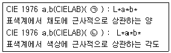
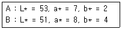
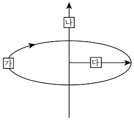

컬러리스트산업기사 (2015-08-16 기출문제)
1과목: 색채심리
1. 색채 조사 방법 중 형용사의 반대어 쌍을 이용하여 일정 점수를 지니는 척도를 주어 각 형용사에 해당하는 점수를 부여하는 방식으로 주로 이미지를 측정하는 방법으로 많이 활용 되는 조사 방법은?
- SD법
- MD법
- AD법
- TD법
(정답률: 89%)

2. 색채의 연상과 상징에 대한 설명이 틀린 것은?
- 특정 색채의 연상은 개인적 경험에 따라 달라질 수 있다.
- 계급을 색채로 구분한 것은 색채의 선호현상으로 볼 수 있다.
- 색채는 시대를 초월하고 지역성을 넘어 전혀 다른 의미를 갖는 경우가 많다.
- 색채는 의식적으로 언어를 대신하여 의미를 함축하여 사용할 수 있다.
(정답률: 75%)
3. 파버 비렌(Faber Birren)의 색과 연상 형태가 틀린 것은?
- 빨강 - 정사각형
- 노랑 - 삼각형
- 초록 - 원
- 보라 - 타원
(정답률: 80%)
4. 일조량과 습도, 기후, 흙, 돌처럼 한 지역의 자연환경적 요소로 형성된 색을 의미하는 것은?
- 지역색
- 풍토색
- 문화색
- 선호색
(정답률: 83%)
5. 카스텔(Castel)은 색채/음악의 척도를 연구하고 각 음계와 색을 연결하였다. 다음 중 그 연결이 틀린 것은?
- A - 보라
- C - 청색
- D - 녹색
- E - 적색
(정답률: 81%)
6. 색의 정서적 반응 중 가장 거리가 먼 것은?
- 녹색은 희망, 안정, 휴양을 느끼게 한다.
- 자주색은 소극적이고 고상하며 고독감, 중립, 중성, 겸손을나타낸다.
- 오렌지색은 수용적이며 따뜻하고 친밀한 성격을 담고 있다.
- 황색은 활동적이며 화려함과 만족감을 준다.
(정답률: 63%)
7. 색채치료 방법 중 색상과 그 치료효과가 바르게 연결된 것은?
- 파랑 - 불면증, 염증, 진정효과
- 자주 - 골절, 근육 긴장 감소
- 연두 - 치통, 히스테리 완화
- 하양 - 우울증, 치통 완화
(정답률: 63%)
8. 자동차에 대한 국내 소비자의 선호색을 알아보고자 할 때 고려할 사항으로 가장 거리가 먼 것은 ?
- 출신국가
- 연령
- 성별
- 교육수준
(정답률: 74%)
9. 색채의 시간성과 속도감에 대한 설명 중 옳은 것은?
- 장파장의 색상은 실제 시간의 흐름보다 시간이 많이 지난 것처럼 느껴진다.
- 속도감은 색상과 채도와의 연관보다 명도와의 연관이 있다.
- 단파장의 색은 실제의 시간이 흐른 것보다 길게 느껴진다.
- 단파장의 색은 속도감이 빠르다.
(정답률: 61%)
10. 국제언어로서의 색과 예시가 잘못 연결된 것은?
- 노랑 - 장애물 또는 위험물의 경고
- 빨강 - 소방기구
- 녹색 - 안전, 휴식
- 파랑 - 수위조절 및 안전지역
(정답률: 88%)
11. 대기시간이 긴 공항 대합실의 기능적 면을 고려할 때 가장 적합한 색은?
- 파란색 계열
- 노란색 계열
- 주황 계열
- 빨간색 계열
(정답률: 92%)
12. 마케팅 전략은 크게 직감적 전략, 분석적 전략, 그리고 무엇으로 구분되는가?
- 감각적 전략
- 전통적 전략
- 통합적 전략
- 이미지 전략
(정답률: 49%)
13. 다음 중 가장 적합한 기본 색채 계획은?
- 전원주택 - 보라색 계열의 색채
- 일반 사무실 - 노란색 계열의 색채
- 학교 강의실 - 빨간색 계열의 색채
- 병원 수술실 - 청록색 계열의 색채
(정답률: 89%)
14. 착시에 관한 설명으로 옳은 것은?
- 노란색 바탕의 회색이 파란색 바탕의 회색보다 노랗게 보인다.
- 빛 자극이 변화하더라도 물체의 색채가 그대로 유지되는색채감각이다.
- 착시의 예로 대비현상과 잔상현상이 있다.
- 파란색 바탕의 노란색이 노란색 바탕의 파란색보다 더 작게 지각된다.
(정답률: 66%)
15. 미국 성조기의 경우 청색이 상징하는 의미는?
- 혁명성
- 순결
- 정직, 평화
- 용기
(정답률: 70%)
16. 기업이 표적시장을 통하여 원하는 결과를 얻을 수 있도록 하기 위하여 사용하는 통제 가능한 마케팅 변수의 총집합이라고 할 수 있는 것은?
- 마케팅 믹스
- 마케팅 타겟
- 마케팅 세그멘테이션
- 마케팅 포지셔닝
(정답률: 59%)
17. 색채정보를 수집하기 위한 방법 중 가장 많이 적용되는방법으로 목표가 되는 샘플링을 추출하여 분석하는 방법은?
- 현장 관찰법
- 포커스 그룹조사
- 실험 연구법
- 표본 조사법
(정답률: 89%)
18. 예술, 디자인계 사조별 색채특성에 관한 설명 중 틀린 것은?
- 야수파는 색채의 특성을 이용하여 강렬한 색채를 주제로사용하였다.
- 바우하우스는 공간적 질서 속에서 색 면의 위치, 배분을 중시하였다.
- 인상파는 병치혼합 기법을 이용하여 색채를 도구화 하였다.
- 미니멀리즘은 비개성적, 극단적 간결성의 색채를 사용하였다.
(정답률: 58%)
19. 색채조사를 위한 표본 추출 방식으로 적합하지 않은 것은?
- 편차가 가능한 많은 방식으로 추출
- 표본을 무작위로 추출
- 대규모 집단에서 소규모 집단으로 추출
- 모집단에 대한 정확한 이해 후에 추출
(정답률: 74%)
20. 주관색(Subjective colors)에 대한 설명 중 옳은 것은?
- 지역과 풍토에 의한 색의 경험
- 대상의 표면색에 대한 무의식적인 추론에 의해 결정되는 색
- 면적의 크기에 따라서 색이 달리 보이는 경우
- 흑백의 선이나 면으로 구성된 도판을 회전시킬 경우 무채색의 자극 밖에 없는데서 유채색이 보이는 경우
(정답률: 37%)
2과목: 색채디자인
21. 다음 중 재질감에 대한 설명이 틀린 것은?
- 자연적 질감은 사진의 망점이나 인쇄상의 스크린 톤 등에서찾을 수 있다.
- 재료, 조직의 정밀도, 질량도, 건습도, 빛의 반사도 등에 따라 시각적 감지효과가 달라진다.
- 손으로 그리거나 우연적인 형은 자연적인 질감이 된다.
- 촉각적 질감은 눈으로 볼 수 있고 손으로 만져서 느낄수도있다.
(정답률: 79%)
22. 빅터 파파넥(Victor Papanek)은 형태와 기능을 포괄적 의미로서 복합기능이라고 규정지었다. 다음 중 그가 규정한복합기능의 구성요인에 해당하지 않는 것은?
- 방법(Method)
- 용도(Use)
- 가치(Value)
- 연상(Association)
(정답률: 79%)
23. 기존 제품의 재료나 기능 또는 형태를 개량하고 개선하는 것을 무엇이라 하는가?
- 리디자인(re-design)
- 리스타일(re-style)
- 이미지 디자인(image design)
- 유니버설 디자인(universal design)
(정답률: 89%)
24. 색상이 갖는 특성과 그 효과가 잘못 연결된 것은?
- 하양 - 정직, 순결, 소박
- 빨강 - 정열, 흥분, 분노
- 노랑 - 명랑, 희망, 광명
- 파랑 - 휴식, 안전, 생명
(정답률: 83%)
25. 면의 형성 중 적극적인 면(positive-plane)과 관련이 없는 것은?
- 점의 확대
- 선의 이동
- 선의 집합
- 너비의 확대
(정답률: 63%)
26. 제품 디자인의 색채계획 시 사용목적에 따라 배색하기 위한구성 요소는?
- 주조색, 보조색, 강조색
- 주요색, 보조색, 강한색
- 주조색, 보강색, 강조색
- 주조색, 보조색, 강한색
(정답률: 95%)
27. 마른 체형을 보완하기 위해 가장 효과적인 색채는?
- 5Y 7/3
- 5B 5/4
- 5PB 4/5
- 5P 3/6
(정답률: 88%)
28. 게슈탈트(Gestalt)의 그루핑 법칙 중 가장 일반적인 것에 해당하지 않는 것은?
- 근접성
- 폐쇄성
- 유사성
- 상관성
(정답률: 80%)
29. 단순한 점이나 선, 기호를 사용하여 어떤 현상의 상호관계나과정, 구조 등을 도해하거나, 사물의 대체적인 형태와 여러부분의 관계를 쉽게 이해할 수 있도록 윤곽과 전반적인 구도를 제시해주는 설명적인 그림은?
- 그래픽 심볼
- 다이어그램
- 일러스트레이션
- 타이포그래피
(정답률: 58%)
30. 좋은 디자인 제품으로 평가되기 위해서 충족되어야 하는디자인의 조건에 대한 설명 중 틀린 것은?
- 합목적성 : 제품 제작에 있어서 실제의 목적에 맞는 디자인을 한다.
- 심미성 : 아름다움을 느끼는 미적 의식으로 주관적, 감성적인 특성을 지닌다.
- 경제성 : 한정된 경비로 최상의 디자인을 한다.
- 독창성 : 디자인의 여러 조건을 하나로 통일하여 합리적인특징을 가진다.
(정답률: 81%)
31. 메이크업의 3대 관찰요소가 아닌 것은?
- 배분(Proportion0
- 배치(Position)
- 입체(Dimension)
- 색상(Color)
(정답률: 52%)
32. 19세기 말에서 20세기 초에 일어났던 양식운동으로서 자연물의 유기적 형태를 빌려 건축의 외관이나 가구, 조명,실내 장식, 회화, 포스터 등을 장식할 때 사용 되었던 양식은?
- 아르누보
- 미술공예운동
- 데 스틸
- 모더니즘
(정답률: 86%)
33. 키치문화의 성격과 내용이 잘못 연결된 것은?
- 일상 : 테마카페, 분장카페 등의 문화
- 혼재 : 신·구 문화가 동시에 존재
- 모방 : 연예인의 옷, 액세서리 등의 유행
- 향수 : 변화하는 사회에 대한 보상심리
(정답률: 47%)
34. 바우하우스 교수였던 요하네스 이텐(Johannes Itten)이 가장중점적으로 교육했던 내용은?
- 색채학
- 작도법
- 가구 제작법
- 광고
(정답률: 72%)
35. 메이크업에서 가장 기본이 되는 균형이 아닌 것은?
- 색의 균형
- 좌우 대칭의 균형
- 입체의 균형
- 부분과 전체와의 균형
(정답률: 48%)
36. 국제적인 행사 등에서의 사용을 목적으로 제작된 그림문자로서, 언어를 초월해서 직감으로 이해할 수 있도록할 그래픽 심벌은?
- 다이어그램(diagram)
- 로고타입(logotype)
- 레터링(lettering)
- 픽토그램(pictogram)
(정답률: 93%)
37. 그리드(grid)에 대한 설명으로 틀린 것은?
- 바둑판 모양의 눈금
- 색채의 명암에 의한 점진적 변화
- 화면 레이아웃의 수단
- 인쇄물의 시각적 질서와 일관성을 유지시키는 도구
(정답률: 81%)
38. 윌리엄 모리스가 디자인에 접목시키고자 했던 예술양식은?
- 바로크
- 로마네스크
- 고딕
- 로코코
(정답률: 82%)
39. 색채계획 과정에서 색채변별능력, 색채조사능력은 어느 단계에서 요구되는가?
- 색채환경분석 단계
- 색채심리분석 단계
- 색채전달계획 단계
- 디자인 적용 단계
(정답률: 72%)
40. 도시의 이미지를 결정짓고 도시민의 삶의 질을 높이는 역할 중 옳은 것은?
- 그린디자인
- 공공디자인
- 편집디자인
- 제품디자인
(정답률: 86%)
3과목: 섹채관리
41. 자외선에 의한 황화현상이 가장 심한 섬유소재는?
- 면
- 마
- 레이온
- 견
(정답률: 60%)
42. 한국산업표준에서 정한 다음 용어 ㉠과 ㉡는 무엇을 뜻하는가?

- ㉠ 채도 ㉡ 채도각
- ㉠ 채도 ㉡ 색상각
- ㉠ 색상 ㉡ 색상각
- ㉠ 색상각 ㉡ 색각
(정답률: 80%)
43. 조명용으로 사용되는 고압장전등의 종류가 아닌 것은?
- 고압수은등
- 메탈할라이드등
- 할로겐등
- 고압나트륨등
(정답률: 54%)
44. CCM(computer color matching)을 도입하는 목적과 가장 거리가 먼 것은?
- 소재의 변화에 따른 신속한 대처가 가능하다.
- 제품의 품질을 균일하게 관리하기 쉽다.
- 정확한 양으로 조색하기 때문에 원가 절감을 할 수 있다.
- 소품종 대량생산에 효과적이나 오랜 경험과 기술을 필요로 하므로 미숙련자는 조색하기 어렵다.
(정답률: 89%)
45. 염료의 설명으로 적절치 않는 것은?
- 최초의 합성염료는 1856년 W.H Perkin이 콜타르에서 보라염료의 합성법을 찾아 Mauve라고 불렀다.
- 천연염료는 대부분 견뢰도는 높지만 색조가 선명하지 않은특성이 있다.
- 복잡한 염색법으로 인해 점차 합성염료로 대체되어 오늘날 천연염료는 공예품 등 특수한 용도에만 사용된다.
- 염료는 일반적으로 물에 잘 녹으며 섬유에 대한 흡착력이우수하다.
(정답률: 54%)
46. 다음 중 색온도가 가장 낮은 것은?
- 일출, 일몰시의 태양
- 구름 낀 하늘
- 정오의 태양
- 맑은 하늘
(정답률: 54%)
47. 금속감이 없는 솔리드그레이와 알루미늄 판상입자가 섞인도장된 메탈릭실버의 광택을 측정하기 위한 가장 좋은 방법은?
- 시료면의 변각 광도분포 조사
- 시료면의 경면 광택도 조사
- 시료면의 대비 광택도 조사
- 시료면의 선명도 광택도 조사
(정답률: 43%)
48. 실내 공간의 조도(lx) 권장기준으로 틀린 것은?
- 주택 부엌 : 200 ~ 300
- 학교 도서실 : 500 ~ 1500
- 사무실 비상계단 : 200 ~ 300
- 주택 거실 : 100 ~ 150
(정답률: 46%)
49. 측정이 간편하고 구조가 간단하여 비교적 저렴한 장비로서현장에서의 색채관리, 이동형 색채계 등으로 많이 활용되는색채계는?
- 분광식 색채계
- 필터식 색채계
- 여과식 색채계
- 회전분할 색채계
(정답률: 74%)
50. 디지털 컬러프린팅에 대한 설명으로 맞지 않는 것은?
- CMYK를 기준으로 코딩한다.
- 하프토닝 방식으로 인쇄한다.
- 병치혼색과 감법혼색이 복합적으로 이루어진 인쇄방식이다.
- 모니터(RGB)의 색역과 일치한다.
(정답률: 71%)
51. 표면색의 색 맞춤에 쓰이는 자연의 주광은?
- 표준광원 C
- 중심시
- 북창주광
- 자극역
(정답률: 56%)
52. 디지털색채와 관계가 가장 먼 것은?
- RGB
- 아날로그(analogue)
- 비트(bit)
- 바이트(byte)
(정답률: 75%)
53. 모든 분야에서 가장 일반적으로 물체의 색을 나타내는데사용되는 표색계는?
- L*a*b* 표색계
- Hunter Lab 표색계
- (x,y) 표색계
- XYZ 표색계
(정답률: 70%)
54. 플라스틱 소재에 대한 설명으로 틀린 것은?
- 일반적으로 가열에 의한 성질에 따라 종류가 분류된다.
- 광택이 좋고 착색이 가능하여 고운 색채를 낼 수 있다.
- 투명도가 높아 유리와 같은 용도로 사용할 수 있다.
- 굴절률이 유리보다 높아서 반사가 크다.
(정답률: 79%)
55. 측색장치로 색채를 측정했을 때 반드시 표기해야 할 사항이아닌 것은?
- 측색의 기준 표준광
- 색채계의 분광분해능
- 표준관측자 시야
- 조명 및 측정 방법
(정답률: 68%)
56. 색 측정용 분광광도계의 기본 구성요소가 아닌 것은?
- 광원
- 빛을 분광시키는 장치
- 컬러매칭 삼중 필터
- 신호처리장치
(정답률: 57%)
57. 조색에 대한 설명으로 틀린 것은?
- 효과적인 재현을 위해서는 표준 표본을 3회 이상 반복측색하여 정확하게 파악해야 한다.
- 재현하려는 소재의 특성을 파악해야 한다.
- 베이스의 종류 및 성분은 색채 재현에 영향을 미치지 않는다.
- 염료의 경우에는 염료만으로 색채를 평가할 수 없고, 직물에염색된 상태로 평가한다.
(정답률: 82%)
58. 육안조색시의 기준 조색 광원은?
- D45
- D55
- D65
- D75
(정답률: 71%)
59. 두 견본 A, B를 측정한 결과가 다음과 같은 때 색차(ΔE)는 얼마인가?

- 9.0
- 6.0
- 3.0
- 1.0
(정답률: 66%)
60. 색채 영상의 입력에 활용되는 디바이스인 디지털 카메라, 스캐너 등의 가장 기본이 되는 요소는?
- CCD(char coupled device)
- CRT(cathode ray tube)
- LCD(liquid crystal display)
- DTP(desk top publishing)
(정답률: 80%)
4과목: 색채지각의이해
61. 프리즘으로 빛을 분광시키는 것은 빛의 어떤 성질을 이용한것인가?
- 반사
- 투과
- 굴절
- 흡수
(정답률: 56%)
62. 두 개 이상의 색광이나 색료를 서로 혼합하여 다른 색채감각을 일으키는 것은?
- 색의 동화
- 색의 잔상
- 색의 현시
- 색의 혼합
(정답률: 79%)
63. 병원이나 역 대합실의 배색 중 지루함을 줄일 수 있는 색계열은?
- 빨강계열
- 청색계열
- 회색계열
- 흰색계열
(정답률: 82%)
64. 색채의 지각과 감정효과에 대한 설명으로 틀린 것은?
- 고명도가 저명도에 비하여 가볍게 느껴진다.
- 고채도가 저채도에 비하여 강한 느낌을 준다.
- 난색계열은 한색계열에 비하여 단단한 느낌을 준다.
- 고명도가 저명도에 비하여 부드러운 느낌을 준다.
(정답률: 66%)
65. 베졸트 브뤼케 현상에 대한 설명으로 옳은 것은?
- 흰색 배경에 검정색 격자무늬로서 격자의 교차점에 흰색점이 지각되는 현상
- 색자극의 순도가 달라지면 지각되는 색의 밝기가 변하는 현상
- 색자극의 밝기가 달라지면 그 색상이 다르게 보이는 현상
- 파장이 같아도 색의 순도가 변함에 따라 그 색상이 변화하는현상
(정답률: 42%)
66. 사람이 많은 곳에서 공연하는 가수의 의상색을 결정할 때특히 고려되어야 할 색의 성질은?
- 명시성
- 주목성
- 수축성
- 온도감
(정답률: 72%)
67. 점을 찍어가며 그림을 그렸던 인상주의 점묘파 화가들은 색의어떤 혼합을 이용하였는가?
- 병치혼합
- 가산혼합
- 감산혼합
- 회전혼합
(정답률: 83%)
68. 다음 중 가장 강한 색상대비를 보이는 예는?
- 청록 - 노랑
- 주황 - 빨강
- 빨강 - 청록
- 노랑 - 주황
(정답률: 75%)
69. 잔상에 대한 다음의 설명 중 틀린 것은?
- 원래의 감각과 같은 질의 밝기나 색상을 가질 때를 양성 잔상이라 한다.
- 원래의 감각과 반대의 밝기 또는 색상을 가질 때를 음성 잔상이라 한다.
- 양성 잔상은 원래의 자극과 같아서 다음에 오는 자극을 더강하게 할 수 있다.
- 음성 잔상은 동화 현상과 관련이 있다.
(정답률: 54%)
70. 좁은 바닥을 더 넓어 보이도록 색을 조정하려 한다. 다음 중가장 적합한 색은?
- 청록색
- 노란색
- 진한 회색
- 파란색
(정답률: 69%)
71. 간상체와 추상체의 파장별 민감도 곡선이 다른 이유는?
- 흡수 스펙트럼의 차이
- 반응 시간의 차이
- 세포 수의 차이
- 순응 민감도의 차이
(정답률: 43%)
72. 다음 중 특성이 다른 하나는?
- 동화현상
- 대비현상
- 베졸드효과
- 줄눈효과
(정답률: 76%)
73. 무대에서는 두 개 이상의 색광을 동일지점에 겹쳐 비춰줌으로써 혼합색을 만들어낸다. 이러한 혼색방법은 다음 중 어디에 속하는가?
- 순차혼색
- 병치혼색
- 동시혼색
- 회전혼색
(정답률: 57%)
74. 빨간색에 흰색을 섞으면 그 비율에 따라 진분홍, 분홍, 연분홍으로 변화하게 되는데 이런 경우 삼속성 중 처음의 빨간색에 비해 떨어지는 것은 무엇인가?
- 명도
- 채도
- 색상
- 광도
(정답률: 65%)
75. 영·헬름홀쯔(Hermann von Helmholtz)의 3원색설이 아닌 것은?
- 3원색설의 세 개의 기본색은 빛의 혼합인 3원색과 동일하다.
- 색의 잔상효과와 대비이론의 근거가 되는 학설이다.
- 노랑은 빨강과 초록의 수용기가 동등하게 자극되었을 때지각된다는 학설이다.
- 세 종류의 시신경세포가 세 개의 기본색에 대응함으로써색채지각이 일어난다는 학설이다.
(정답률: 44%)
76. 색상 대비가 가장 잘 일어나는 경우는?
- 1차색끼리의 대비
- 2차색끼리의 대비
- 3차색끼리의 대비
- 2차색과 3차색의 대비
(정답률: 68%)
77. 빨간색에 대한 잔상이 녹색이고, 녹색에 대한 잔상은 빨간색이며, 노란색과 파란색 사이에도 상응하는 결과가 관찰된다는 현상학적 사실에 근거하여 색채지각의 이론을 제안한 사람은?
- 헤링
- 헬름홀쯔
- 드발로
- 먼셀
(정답률: 64%)
78. 가법혼색에 관한 설명이 옳은 것은?
- 파랑과 녹색을 합하면 자주가 된다.
- 녹색과 빨강을 합하면 노랑이 된다.
- 빨강과 파랑을 합하면 보라가 된다.
- 3원색을 모두 합하면 검정이 된다.
(정답률: 68%)
79. 주목성에 대한 설명 중 틀린 것은?
- 명시도가 높은 색은 주목성도 높다.
- 주목성은 고채도, 난색계의 색이 높다.
- 주목성은 색의 배경과 관계가 있다.
- 물체색이 얼마나 잘 보이는가를 나타내는 정도이다.
(정답률: 43%)
80. 여러 가지 파장의 빛이 고르게 석여 있을 때 지각되는 색은?
- 녹색
- 파랑
- 검정
- 백색
(정답률: 83%)
5과목: 색채체계의이해
81. NCS색체계의 설명으로 옳은 것은?
- Netherland의 Color system이다.
- 심리적인 비율척도를 사용해 색 지각량을 나타냈다.
- 기본 6색은 적, 녹, 청, 황, 백, 자색이다.
- 인간의 색감과는 많은 차이가 있어 물리적 색표로 제작되었다.
(정답률: 33%)
82. 음양오행의 방위 색이 틀린 것은?
- 흑 - 북방
- 청 - 동방
- 황 - 남방
- 백 - 서방
(정답률: 73%)
83. CIE L*C*h 색공간에서 노랑의 색상 값은?
- h = 0°
- h = 90°
- h = 180°
- h = 270°
(정답률: 74%)
84. CIE 색체계에 관한 설명 중 틀린 것은?
- 스펙트럼의 4가지 기본색을 사용하였다.
- 3원색광으로 모든 색을 표시한다.
- XYZ 색체계라고도 불린다.
- 말발굽 모양의 색도도로 표시된다.
(정답률: 60%)
85. ISCC-NIST 색명법에 관한 설명 중 틀린 것은?
- 미국 색채 협의회(ISCC)에 의해서 1939년에 고안된 관용색이름 체계이다.
- 한국의 KS를 제정하는데 영향을 주었다.
- 먼셀 색표집을 기준으로 하여 정한 것이다.
- 무채색축의 명도단계를 5개로 나누고 있다.
(정답률: 20%)
86. 표준 색체계가 갖추어야 할 조건이 아닌 것은?
- 특수 안료를 이용한 재현 가능성
- 색채간의 지각적 등보성
- 색채 속성배열의 과학적 근거
- 색채 표기의 국제 기호화
(정답률: 67%)
87. 물체표면의 상대적인 명암에 관한 색의 속성을 나타내는 것으로 묶인 것은?
- hue, value, chroma
- value, neutral, gray scale
- hue, value, gray scale
- value, neutral, chroma
(정답률: 72%)
88. 오스트발트 색체계에서 7ga, 7ic, 7le, 7ng의 공통된 속성은?
- 등흑계열
- 등백계열
- 등순계열
- 등가색환계열
(정답률: 65%)
89. Munsell은 무채색 축을 기준으로한 자신의 색입체를 무엇이라하였는가?
- Color tree
- Color solid
- Color body
- Color triangle
(정답률: 70%)
90. 톤인톤(tone in tone) 배색이란?
- 유사색상이나 다른 색상의 톤을 통일한 것이다.
- 색상차는 적게 하고 명도와 톤의 차는 크게 배색한 것이다.
- 톤의 차이가 확연한 그라데이션도 배색의 한 예이다.
- 밝은 베이지와 어두운 브라운의 배색이 그 예이다.
(정답률: 65%)
91. 오스트발트 표색계의 색입체를 구성하는 기본 색상의 수는?
- 10
- 18
- 24
- 40
(정답률: 71%)
92. 비렌의 색삼각형을 구성하는 7개의 기본범주에 해당하지 않는 것은?
- TINT
- GRAY
- ACCENT
- SHADE
(정답률: 75%)
93. 한국산업표준의 계통색 "밝은 빨강"에 해당되는 관용색명은?
- 카민
- 장미색
- 홍색
- 주색
(정답률: 54%)
94. 그림은 먼셀 색체계를 나타낸 것이다. (가), (나), (다)에 해당하는 속성이 순서대로 옳게 제시된 것은?

- 색상, 채도, 명도
- 명도, 채도, 색상
- 채도, 명도, 색상
- 색상, 명도, 채도
(정답률: 79%)
95. 제품 색채계획의 배색에 관한 사항 중 틀린 것은?
- 색채 이미지는 단색보다는 배색시에 더욱 뚜렷하게 전달된다.
- 비콜로 배색, 트리콜로 배색은 강한 대비를 이용한 방법이다.
- 색채계획에서 제품과 시장, 소비자의 특성을 고려한 배색이 중요하다.
- 주조색이 결정되고 배색을 할 때는 디자이너의 감성이 제품특성보다 중요하다.
(정답률: 80%)
96. 일본 색채 디자인 연구소에 의해 개발된 색체 의미전달을 위한 언어적 표현과 시각 이미지에 의한 색채 분류를 위해 체계화한 방법의 이름은?
- 이미지 스케일
- 이미지 매핑
- 칼라 팔레트
- 세그먼트 맵
(정답률: 56%)
97. CIE L*a*b*에 대한 설명으로 옳은 것은?
- 지각적으로 균등한 간격을 가진 색공간 표색방법이다.
- 밝기를 나타내는 L*축의 중심에 가까울수록 채도가 높아진다.
- a*값이 + 이면 노랑, - 이면 파란빛이 강해진다.
- 기후, 환경 등에 영향을 받아 항상 같은 색을 유지하기 힘든 단점이 있다.
(정답률: 54%)
98. 먼셀 색입체의 수직 단면도에서 볼 수 없는 것은?
- 다양한 색상환
- 다양한 명도
- 다양한 채도
- 보색 색상면
(정답률: 46%)
99. 색의 3속성에 대한 색입체로 오메가공간을 설정한 색채 조화론은?
- 문·스펜서의 색채조화론
- 파버 비렌의 색체조화론
- 저드의 색채조화론
- 루드의 색채조화론
(정답률: 62%)
100. NCS색표기 "S3020-Y90R"에 대한 해석으로 옳은 것은?
- 대상색에서 유채색도가 50%의 비율
- 대상색에서 검정색도가 30%의 비율
- 대상색에서 하양색도가 20%의 비율
- 유채색도에서 노랑은 90%, 빨강은 10%의 비율
(정답률: 72%)